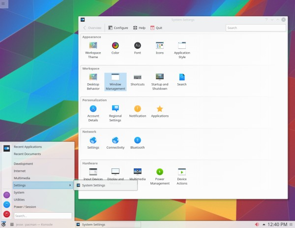

The Edge

Some History
Arch Linux was created by Judd Vinet with the first official release on March 11, 2002. Vinet was inspired by CRUX, another
minimalist Linux distro, and aimed for a lightweight system focused on simplicity. While being a relative new comer to the Linux
world, Arch is one of the most popular distributions in the world today. Arch is known for living on the bleeding edge
of software releases, offering up the latest and greatest software as soon as it's released. This can come at the cost of stability
and security, and may not be best for new Linux users.
Using Arch
Arch Linux is a rolling release distro, meaning that you install it once and it will update itself forever.
This is in contrast to the other distributions mentioned on this website which could take years before getting a new
version.
Arch uses the Pacman package manager, an incredibly powerful tool for managing your software. When you pair Pacman
with the Arch User Repository (AUR), you have access
to just about any software you could ever want. The AUR is a community driven project, allowing users to create packages
not already in the official Arch repositories. Additionally, using an AUR helper like YAY or PARU makes installing and
updating your system even easier! For instance, to install a package with YAY, the command would be
"yay -S package-name". Doing a full system update the only
commanded needed is simply "yay".
Arch Linux on it's own is as minimal a Linux experiance as you can get. It comes with no desktop environment or user interface,
and after installation you are simply greated with a blinking cursor, ready to accept your commands. It is up to the user to
install all of the extra packages and software they want or need to make it exactly the way they want it. This is not ideal
for new Linux users and seasoned users alike. This is why in April 2021, the "archinstall" script was released, making it
easier to install Arch Linux. This script will walk you through the installation process and even help installing the desktop
environment of your choice.
Wrapping Up
Arch Linux is a great distro for those seasoned Linux nerds that want to get into the nitty gritty of their system, and have
complete control over what is installed on their system. It is not for the faint of heart, and I would not recommend it for
a new Linux user. HOWEVER... Arch Linux has some of the best distributions based on it, that are perfect
for a new Linux user. I have some of these distros listed on the right of the page, and I would be remiss if I didn't mention
Endeavour OS. It is the distribution that I have been using for the past 5 years, and I can't recommend it enough.